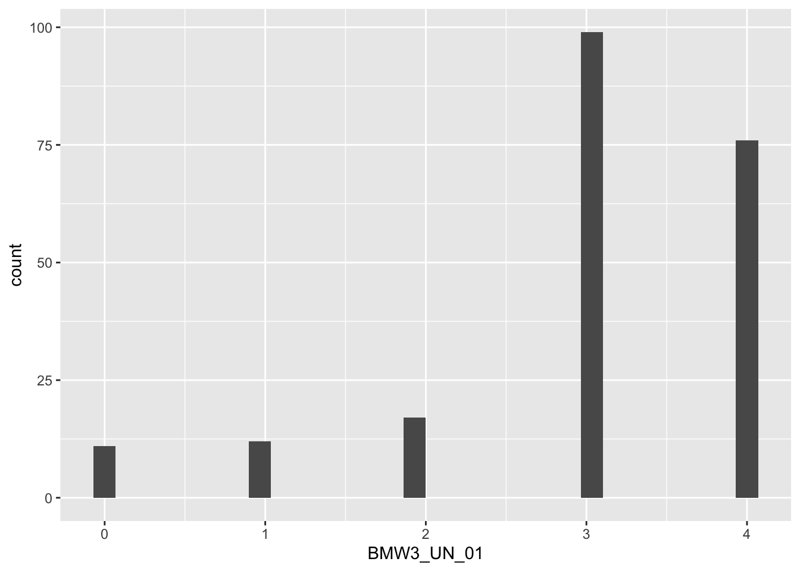
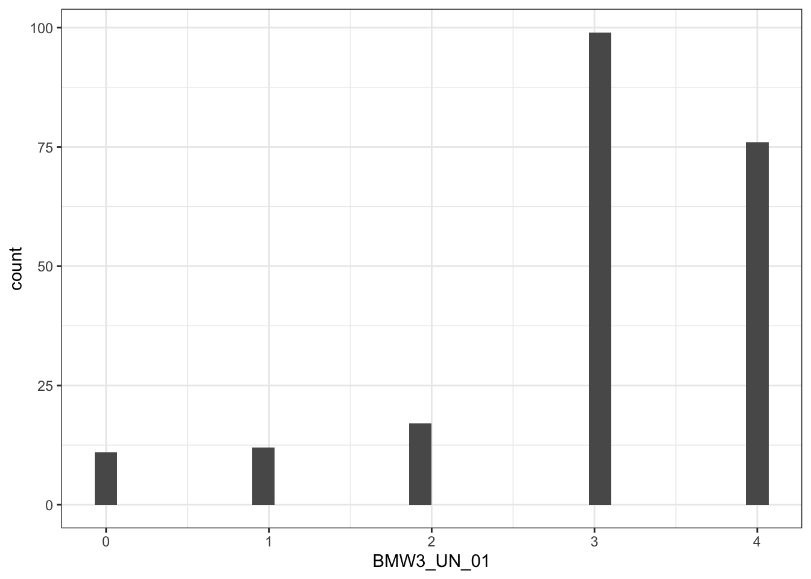
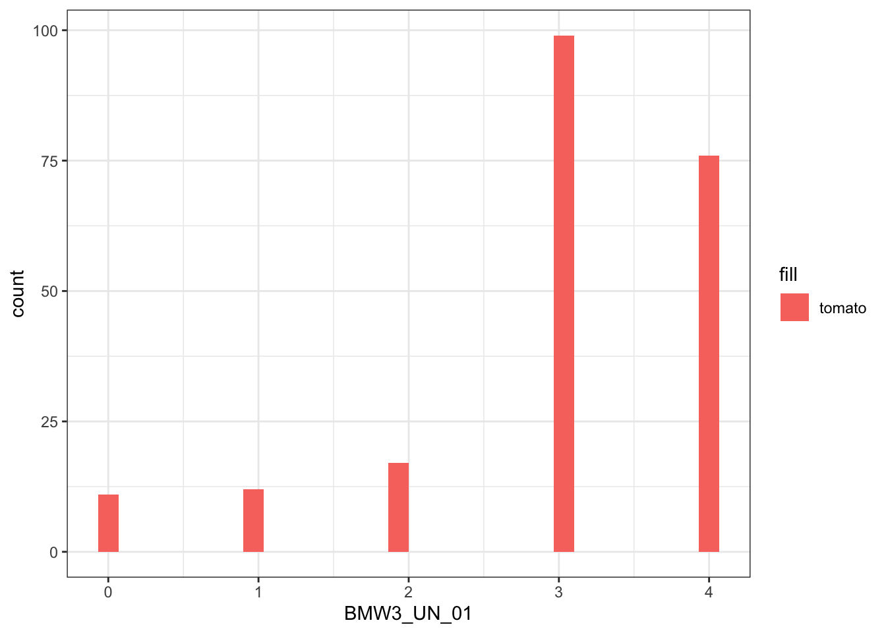
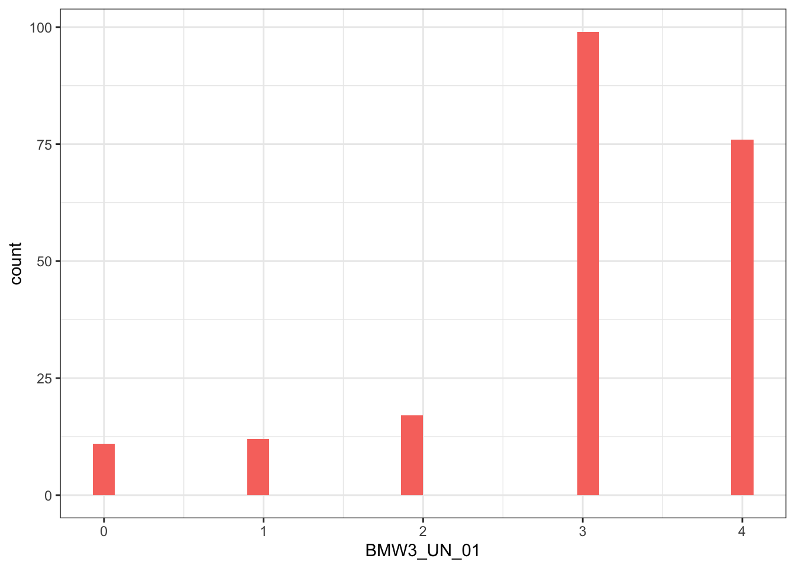
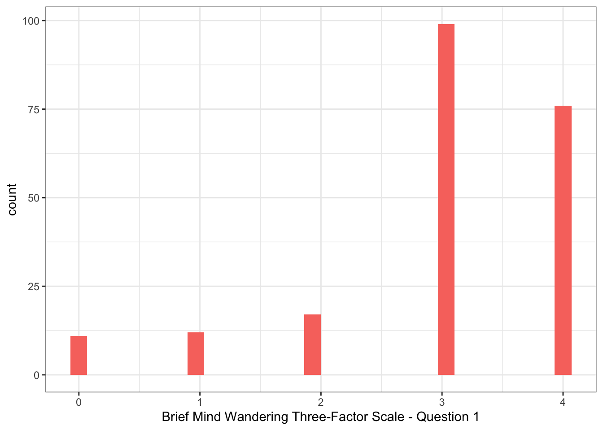
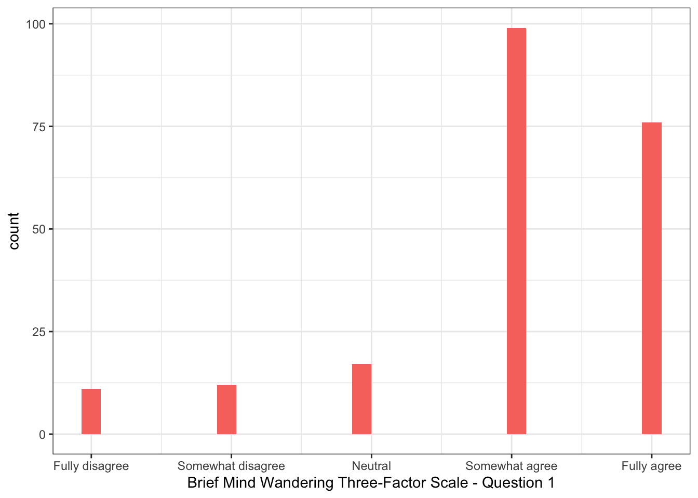

We’ve all been there: you may be trying to focus on a lecture, but a thought on what you would like to have for lunch pops into your mind. Mind wandering describes the common experience of one’s thoughts driting away form the task at hand towards self-generated thoughts and feelings (Smallwood & Schooler, 2006). Today, we’ll work with some publicly available data from a research project on mind wandering. Anna Schubert and colleagues (Schubert et al., 2024) conducted a study in which they created a 12-item questionnaire that measures how often your mind wanders without meaning to, how often you let it wander on purpose, and how aware you are when it happens.
Aims of the activity
We are going to:
Download the data
Setup the appropriate bits and pieces in RStudio
Read in the data
Build a plot and make it look nice
Watch the ‘How to’ video
If you haven’t done so already, this is a good time to watch the ‘How to’ video on the handbook page on ‘How to build a plot’.
Step 1: Download the files
To complete this lab activity you will need two files:
We’ll work with an example script called 4141_wk1_lab_act1.qmd. This is a Quarto document.
We need a data file called data_bmw3.csv. This is a file that contains the responses of the participants in one of the studies reported on in the paper by Schubert et al. (2024). It is a file of the type .csv. This means that individual bits of data are separated by comma’s. We’ll often use .csv files.
You can download the files from the handbook (see Step 1 under Lab activity). Usually they will be saved in your ‘Downloads’ folder.
Step 2: Setup
Before we can do anything, we need tell R what packages we want to use. You may wonder what a package is. If R is your kitchen with basic equipment, a package is a specialist cookbook that adds new recipes. All the packages that you’ll need have already been installed on the R-server, but you have to tell R which cookbooks to get off the shelf for what you want to do right now. We use the function library() to do that. It is useful to have a section at the top of your script where you get all the cookbooks you need for this script off the shelf (…or load all the relevant libraries).
The code (or instructions to R) to load the libraries is in the bit below. This is called a ‘code chunk’. You can run the code in the chunk by clicking on the green arrow in the top right corner of the code chunk.
Action: Run the code below to load the libraries.
library(here) # the 'here' package helps with finding your files
here() starts at /Users/margrietgroen/stats/2627_year1
library(tidyverse) # the 'tidyverse' is a set of packages that handles almost everything you need to do with data
Warning: package 'ggplot2' was built under R version 4.4.3
Warning: package 'tidyr' was built under R version 4.4.3
Warning: package 'dplyr' was built under R version 4.4.3
── Conflicts ────────────────────────────────────────── tidyverse_conflicts() ──
✖ dplyr::filter() masks stats::filter()
✖ dplyr::lag() masks stats::lag()
ℹ Use the conflicted package (<http://conflicted.r-lib.org/>) to force all conflicts to become errors
Step 3: Reading in the data
The next step is to read in a data file. Here we’ll use a subset of the data collected by Schubert and colleagues. It contains responses from 215 students on a questionnaire that measures mind wandering. It is a file of the type .csv, so we’ll use the function read_csv() to do this. Inside the function, we tell R where to find the file. This is the bit that comes after here(): 4141_wk1_lab; it specifies the filepath. After the comma, we tell R what the file is called, including the extension (data_bmw3.csv). Both of these bits (where it is and what it is called) need to be in double quotation marks (““).
Rows: 215 Columns: 22
── Column specification ────────────────────────────────────────────────────────
Delimiter: ","
chr (4): location, type, gender, education
dbl (18): subject, id, Age, BMW3_UN_01, BMW3_UN_02, BMW3_UN_03, BMW3_UN_04, ...
ℹ Use `spec()` to retrieve the full column specification for this data.
ℹ Specify the column types or set `show_col_types = FALSE` to quiet this message.
You may wonder what the bit is that comes before read_csv(). There we have the name of the object we are assigning the data file to. I’ve called it data, but you can give it any name you like. The <- in between is called an assignment arrow. It basically means that R puts the content of the data file data_bmw3.csv stored at location 4141_wk1_lab in an object called data_mw. Once you’ve run the code, you should see it in your Environment (top right quadrant).
Step 4: Build a plot
Now we are ready to create our first plot. Let’s say we’d like to visualise how many people selected each response option for question 1 of the questionnaire. Question 1 was “While listening to a presentation, my thoughts start to trail off unintentionally.” Participants were asked to decide to what extent they agreed or disagreed with that statement. They chose one of the following options: “Fully disagree”, “Somewhat disagree”, “Neutral”, “Somewhat agree” or “Fully agree”.
We can do that by creating a histogram. The function we use for that (and for a lot of other plots you’ll make for research methods and stats) is ggplot(). Inside the function we tell R which data to use and which variable to map onto the x-axis of the histogram.
Action 4a: Run the code below to create a histogram
ggplot(data = data_mw, mapping =aes(x = BMW3_UN_01)) +# specifies data and variable to plotgeom_histogram() # specifies what type of plot
`stat_bin()` using `bins = 30`. Pick better value `binwidth`.

In a histogram, the height of the bar indicates the number of observations, in this case the number of people that chose each response option. For example, almost 100 people chose option 3.
Now, this does the job, but it doesn’t quite look the way I’d like it to look. Let’s change that. I don’t particularly like the grey background. I can change that by adding a layer to the plot specifying a different background. There are lots of different ‘themes’ in ggplot() that you can use. Have a look at https://ggplot2.tidyverse.org/reference/ggtheme.html.
Action 4b: Run the code below see the change in background
ggplot(data = data_mw, mapping =aes(x = BMW3_UN_01)) +# specifies data and variable to plotgeom_histogram() +# specifies what type of plottheme_bw() # changes the background
`stat_bin()` using `bins = 30`. Pick better value `binwidth`.

I would like the bars to be red instead of grey. I can make that happen, by specifying an additional bit of code (or ‘argument’ in the ggplot() part. There are lots of different colours and colour schemes available within ggplot(). Have a look at this overview and choose one you like for your plot. There is more to say about which colour schemes to use, but we’ll save that for another day.
Action 4c: Run the code below to change the colour of the bars
ggplot(data = data_mw, mapping =aes(x = BMW3_UN_01, fill ="tomato")) +# ...and makes the bars redgeom_histogram() +# specifies what type of plottheme_bw() # changes the background
`stat_bin()` using `bins = 30`. Pick better value `binwidth`.

To avoid the legend on the right getting printed (because we don’t need it in this case), we can tell R not to include it.
Action 4d: Run the code below to remove the legend
ggplot(data = data_mw, mapping =aes(x = BMW3_UN_01, fill ="tomato")) +# ...and makes the bars redgeom_histogram() +# specifies what type of plottheme_bw() +# changes the backgroundtheme(legend.position ="none") # removes the legend
`stat_bin()` using `bins = 30`. Pick better value `binwidth`.

Now, it would be good to have a more informative label for what we’ve plotted on the x-axis. Instead of the variable name BMW3_UN_01, we’ll add ‘Brief Mind Wandering Three-factor Scale - Question 1’.
Action 4e: Run the code below to change the title of the x-axis
ggplot(data = data_mw, mapping =aes(x = BMW3_UN_01, fill ="tomato")) +# ...and makes the bars redgeom_histogram() +# specifies what type of plottheme_bw() +# changes the backgroundtheme(legend.position ="none") +# removes the legendlabs(x ="Brief Mind Wandering Three-Factor Scale - Question 1") # add more informative title for the x-axis
`stat_bin()` using `bins = 30`. Pick better value `binwidth`.

Finally, instead of the numerical values 0 to 4 that are currently on the x-axis, we’ll add the labels that are associated with each of these values.
Action 4f: Run the code below to change the value labels
ggplot(data = data_mw, mapping =aes(x = BMW3_UN_01, fill ="tomato")) +# ...and makes the bars redgeom_histogram() +# specifies what type of plottheme_bw() +# changes the backgroundtheme(legend.position ="none") +# removes the legendlabs(x ="Brief Mind Wandering Three-Factor Scale - Question 1") +# add more informative label for the x-axisscale_x_continuous( # replace numerical values with text labelsbreaks =0:4,labels =c("Fully disagree", "Somewhat disagree", "Neutral", "Somewhat agree", "Fully agree") )
`stat_bin()` using `bins = 30`. Pick better value `binwidth`.

That’s it! You have created your first plot.
For more practice, go through the same steps for a different question.